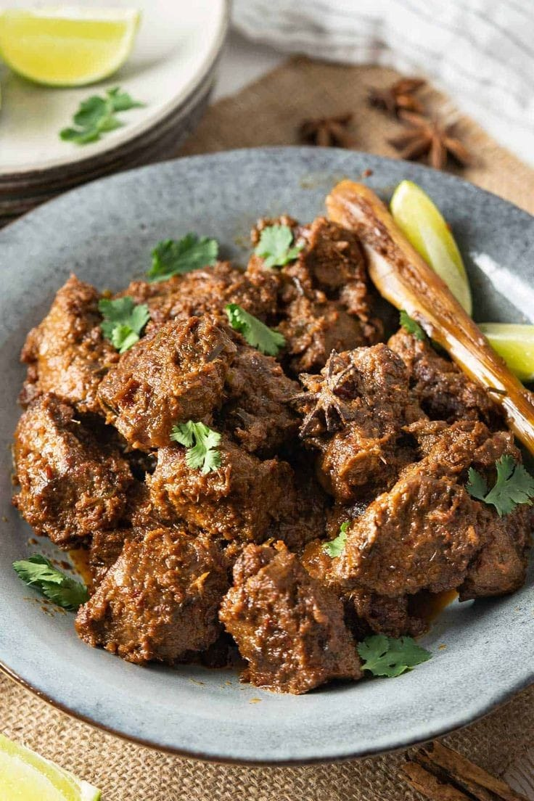

Rendang (Minangkabau) adalah hidangan berbahan dasar daging yang dihasilkan dari proses memasak suhu rendah dalam waktu lama dengan menggunakan aneka rempah-rempah dan santan. Proses memasaknya memakan waktu berjam-jam, hingga yang tinggal hanyalah potongan daging berwarna hitam pekat. Rendang dapat dijumpai di rumah makan Padang di seluruh dunia. Masakan ini populer di Indonesia dan negara-negara Asia Tenggara lainnya, seperti Malaysia, Singapura, Brunei, Filipina, dan Thailand. Di daerah asalnya, Pada tahun 2011, rendang pernah dinobatkan sebagai hidangan yang menduduki peringkat pertama daftar World's 50 Most Delicious Foods (50 Hidangan Terlezat Dunia) Dan pada tahun 2018, rendang secara resmi ditetapkan sebagai salah satu dari lima hidangan nasional Indonesia.
Resep Rendang
1 Kilo Gram daging sapi bagian paha
2500 ml santan
3 Batang serai di geprek
8 Lembar daun jeruk
5 Lembar daun salam
Bumbu Halus yang Digunakan
250 Gram cabai keriting merah dan rawit
250 Gram bawang merah
1 Sendok teh jinten
1 Sendok teh adas
1 Butir pala
5 Butir cengkih
3 Butir kemiri
1 Sendok teh merica
4 Sendok teh ketumbar
Seruas jahe
Seruas lengkuas
Seruas kunyit
Garam dan gula secukupnya